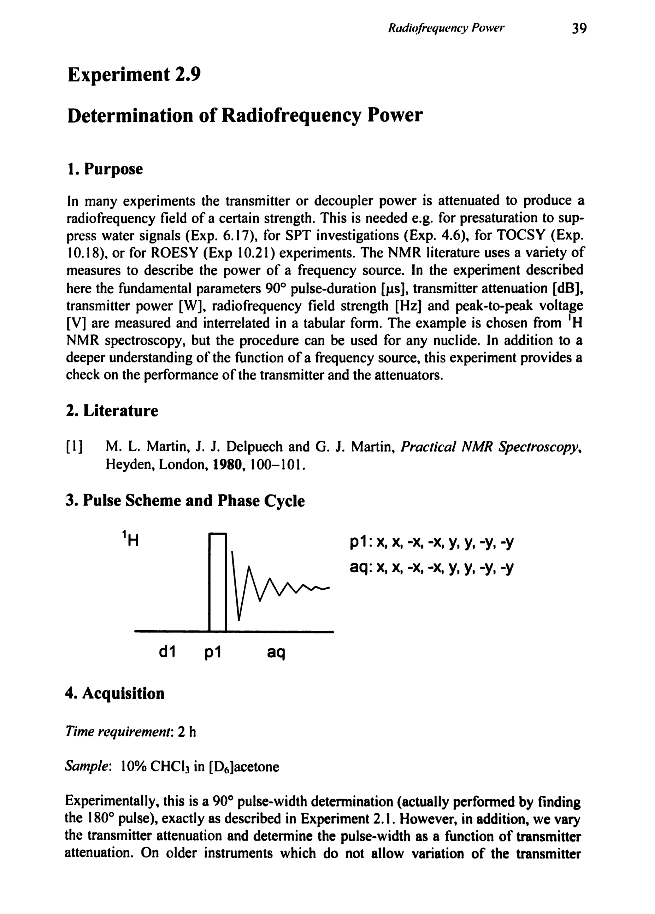
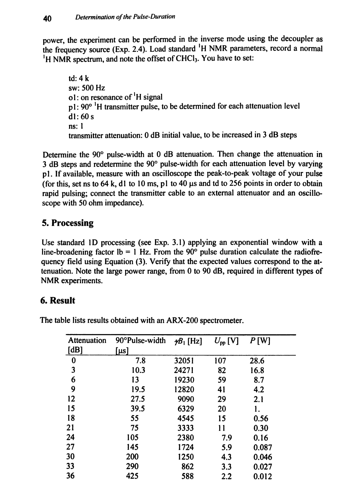
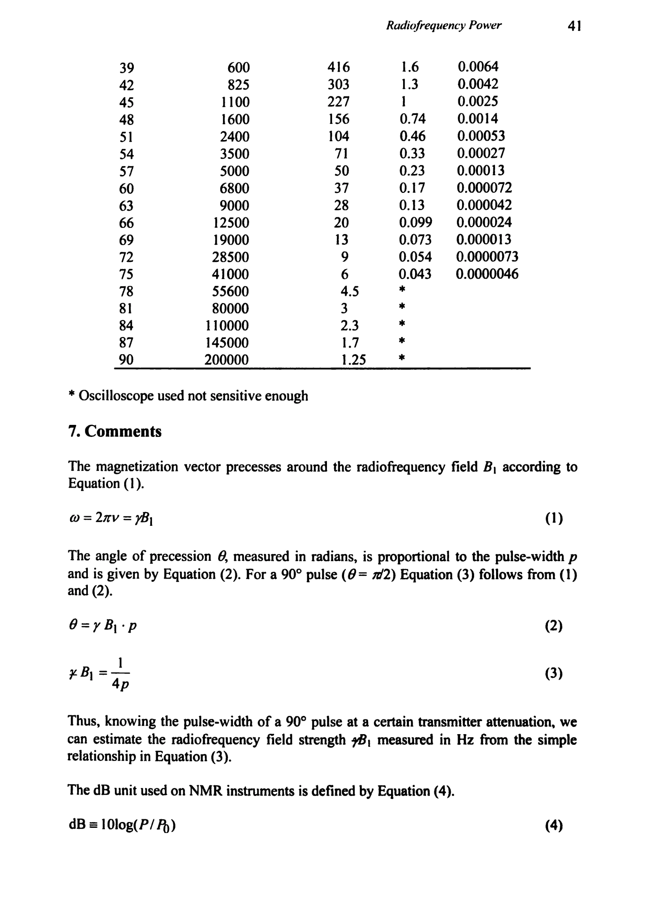
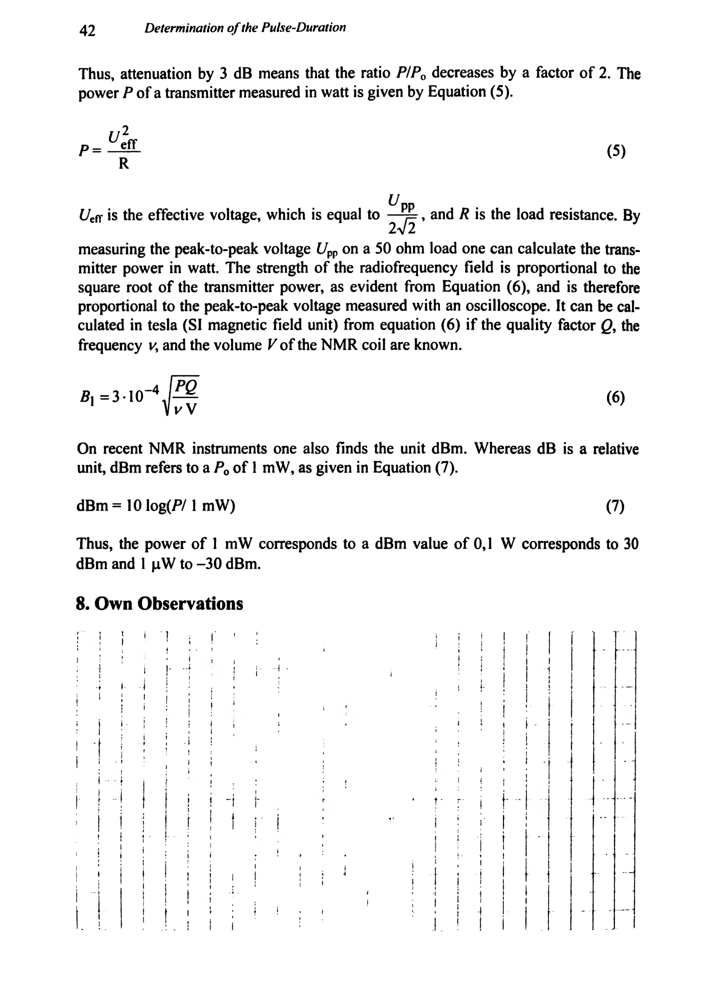

Experiment 2.9
Determination of Radiofrequency Power
射频功率的测定
PDF 54–57 · 原书 39–42 · Determination of Pulse-Duration




核磁共振实验方法、脉冲序列与谱图实践
Experiment 2.9
射频功率的测定
PDF 54–57 · 原书 39–42 · Determination of Pulse-Duration



